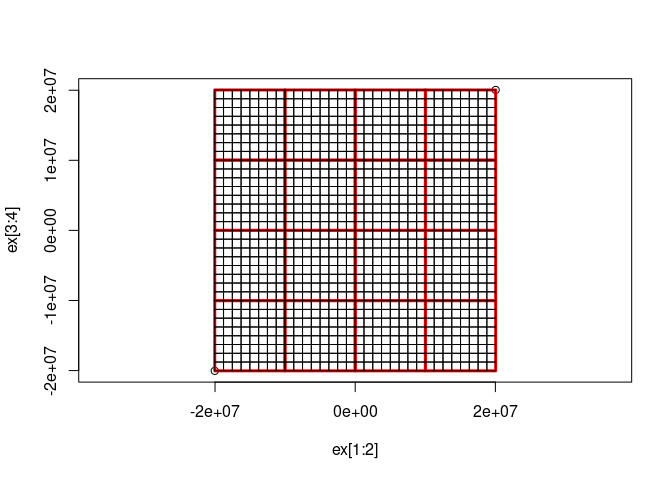

The goal of filearchy is to generate pyramid tiled image directories. (Like gdal2tiles.py).
TODO
-[ ] we have dry_run in gdal_tiles() but I think it should be a separate function to render from the scheme -[ ] implement xyz vs tms mode (I think it’s just nrow - row) -[ ] driver and file extension options -[ ] make it clear that byte-scaling is not mandatory, perfectly valid to have tiles of data (like (tiles-prod)[https://s3.amazonaws.com/elevation-tiles-prod/geotiff])
Installation
You can install the development version of filearchy from GitHub with:
# install.packages("devtools")
devtools::install_github("hypertidy/filearchy")Example
‘gebco_ovr5.vrt’ is a pre-prepared version of GEBCO 2023 elevation COG that has been Byte-scaled and reduced to the zoom overview 5
library(filearchy)
#options(parallelly.fork.enable = TRUE, future.rng.onMisuse = "ignore")
#library(future); plan(multicore)
dsn <- system.file("extdata/gebco_ovr5.vrt", package = "filearchy", mustWork = TRUE)
tiles <- gdal_tiles(dsn)
#> [1] "tiles in directory: /tmp/Rtmp2nIrIT/file7446c724d8950"
#plan(sequential)
fs::dir_ls(dirname(dirname(dirname(tiles$path[1]))), recurse = TRUE, type = "f")
#> /tmp/Rtmp2nIrIT/file7446c724d8950/0/0/0.png
#> /tmp/Rtmp2nIrIT/file7446c724d8950/1/0/0.png
#> /tmp/Rtmp2nIrIT/file7446c724d8950/1/0/1.png
#> /tmp/Rtmp2nIrIT/file7446c724d8950/1/1/0.png
#> /tmp/Rtmp2nIrIT/file7446c724d8950/1/1/1.png
#> /tmp/Rtmp2nIrIT/file7446c724d8950/2/0/0.png
#> /tmp/Rtmp2nIrIT/file7446c724d8950/2/0/1.png
#> /tmp/Rtmp2nIrIT/file7446c724d8950/2/0/2.png
#> /tmp/Rtmp2nIrIT/file7446c724d8950/2/0/3.png
#> /tmp/Rtmp2nIrIT/file7446c724d8950/2/1/0.png
#> /tmp/Rtmp2nIrIT/file7446c724d8950/2/1/1.png
#> /tmp/Rtmp2nIrIT/file7446c724d8950/2/1/2.png
#> /tmp/Rtmp2nIrIT/file7446c724d8950/2/1/3.png
#> /tmp/Rtmp2nIrIT/file7446c724d8950/2/2/0.png
#> /tmp/Rtmp2nIrIT/file7446c724d8950/2/2/1.png
#> /tmp/Rtmp2nIrIT/file7446c724d8950/2/2/2.png
#> /tmp/Rtmp2nIrIT/file7446c724d8950/2/2/3.png
#> /tmp/Rtmp2nIrIT/file7446c724d8950/2/3/0.png
#> /tmp/Rtmp2nIrIT/file7446c724d8950/2/3/1.png
#> /tmp/Rtmp2nIrIT/file7446c724d8950/2/3/2.png
#> /tmp/Rtmp2nIrIT/file7446c724d8950/2/3/3.png
gdalraster::createCopy("GTiff", tf <- tempfile(fileext = ".tif"), tiles$path[1])
#> 0...10...20...30...40...50...60...70...80...90...100 - done.
ds <- new(gdalraster::GDALRaster, tf, read_only = FALSE)
## tiles are 256x256 by default
w <- pi * 6378137
ds$setGeoTransform(c(-w, w * 2 / 256, 0, w, 0, -w * 2 / 256))
#> [1] TRUE
gdalraster::plot_raster(ds, bands = 1:3)
#> Warning in graphics::plot.window(xlim = xlim, ylim = ylim, asp = asp, xaxs =
#> xaxs, : "bands" is not a graphical parameter
ds$close()
m <- do.call(cbind, maps::map(plot = F)[1:2])
m[m[,1] > 180, ] <- NA
# library(gdalraster)
## we have to handle missing values
nas <- is.na(m[,1])
xylines <- m
library(gdalraster)
#> GDAL 3.9.0dev-cb4d30f56d, released 2024/04/15 (debug build), GEOS 3.12.1, PROJ 9.3.1
xylines[!nas, ] <- gdalraster::transform_xy(m[!nas, ],
srs_to = srs_to_wkt("EPSG:3857"), srs_from = srs_to_wkt("EPSG:4326"))
lines(xylines)
all(file.exists(tiles$path))
#> [1] TRUEOr, just do a dry_run:
scheme <- gdal_tiles(dsn, dry_run = TRUE, nzoom = 5)
ex <- c(min(scheme$xmin), max(scheme$xmax), min(scheme$ymin), max(scheme$ymax))
plot(ex[1:2], ex[3:4], asp = 1)
md <- dplyr::filter(scheme, zoom == round(mean(unique(zoom)) ))
with(md, rect(xmin, ymin, xmax, ymax, border = "red", lwd = 3))
mx <- dplyr::filter(scheme, zoom == max(zoom) )
with(mx, rect(xmin, ymin, xmax, ymax))
any(file.exists(scheme$path))
#> [1] FALSECode of Conduct
Please note that the filearchy project is released with a Contributor Code of Conduct. By contributing to this project, you agree to abide by its terms.